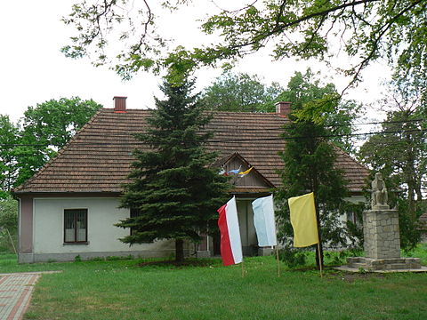

Muzeum Figur Chrystus Frasobliwego w Jeżowem – placówka muzealna zlokalizowana w Jeżowem, województwo podkarpackie.
Ze względu na obfitą kolekcję rzeźb Chrystusa Frasobliwego przybrało oryginalną nazwę – Muzeum Figur Chrystusa Frasobliwego w Jeżowem.
Muzeum w Jeżowem jest jedyną placówką w Polsce posiadającą zbiory o tej tematyce. Większość eksponatów zgromadził założyciel jeżowskiego muzeum – ks. Ludwik Bielawski, będący w latach 1958–1994 proboszczem Parafii Narodzenia NMP w Jeżowem.
